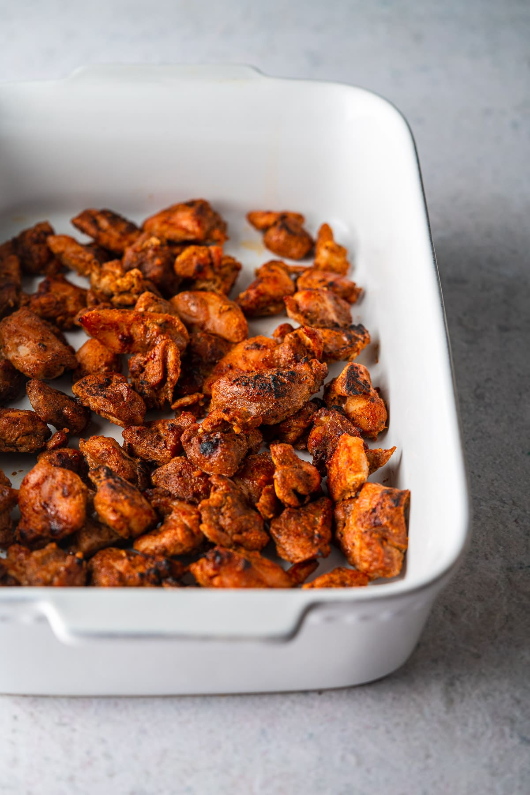
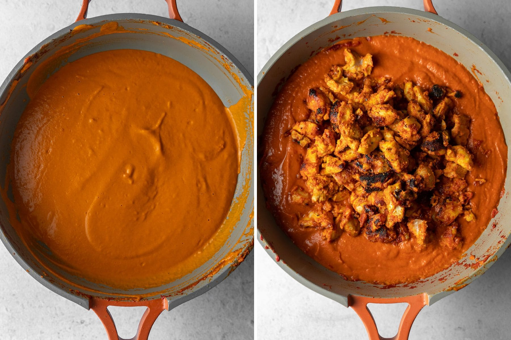

Butter Chicken

Ingredients Required
- Chicken
- Lemon
- Ginger garlic paste
- Salt and Spices
- Chilis
- Tomatoes
- Onion
- Butter
- Whole Spices
- Sugar
- Heavy Creamy
Recipe
- Marinating the chicken
- Trim the fat off of the chicken thighs, and then cut them into 1-inch cubes.
- Mix the ingredients for the marinade - the dahi, lemon juice, ginger garlic paste, chopped green chilis, spices, and salt in a baker or large mixing bowl that will fit the amount of chicken you're making.
- Give the marinade a solid whisk until it's smooth and uniform. Then, add the chicken thighs into the marinade and mix until the pieces are evenly coated.
- It's best to throw on a pair of gloves and really massage the marinade into the chicken thighs, but you can also toss it together with a spatula for an even coating.
- Once that's done, cover the chicken with plastic wrap and refrigerate for a minimum of 30 minutes, and up to 24 hours.
- The Makhani Sauce
- To start, melt 2 tablespoons of butter or ghee in a large pan or pot. While the butter melts, crush 4-5 green cardamom pods with a mortar and pestle or the flat of knife and remove the black seeds. Toss the green shells or save for a cup of chai. Once it's hot, add the star anise, black cardamom pod, cumin seeds, green cardamom seeds, and cinnamon stick for a minute to release their flavor.
- Then, add the aromatics - the onion and ginger garlic paste. Allow them to cook on a medium heat until the onion starts to lightly caramelize into a golden brown color. At that point, add the ground spices - garam masala, coriander, cloves, and kashmiri chili powder.
- Give it a good stir and sauté for a minute to let them bloom in the fat before adding the tomato paste and canned tomatoes. Add ½ teaspoon of salt (or to taste) and the sugar.
- Lower the stove to a low to medium heat and allow the spices and tomatoes to simmer until it thickens and darkens significantly.
- Cooking the Chicken
- Heat a cast iron skillet on high heat with ghee or neutral oil - essentially any cooking oil with a higher smoke point.
- Once it's screaming hot, add in the marinated chicken. Cook on each side for 3-4 minutes until the chicken reaches an internal temperature of 165ºF and has crispy, charred edges. Once cooked, set the chicken aside.

- Blending the curry
- You'll see some of the butter start to release on the sides and form small pools. This is exactly what you're looking for! Switch the heat off.
- Carefully remove and discard the star anise, black cardamom pod, and cinnamon stick.
- If you're using a glass blender, be sure to allow the curry to cool a bit to prevent the glass from shattering. Transfer everything to a high-speed blender, along with the other 2 tablespoons of butter.
- Blend the sauce until completely smooth, adding a tablespoon of water at a time until smooth and silky.
- Finishing off the Butter Chicken
- Return the sauce to the pot. Turn the heat on to a medium low.
- Transfer in the cooked chicken with all of the juices from the pan. Toss it together with the sauce, and then continue to simmer the sauce with the lid on for a few minutes until the butter releases on the side again and the sauce is thick.
- Slowly add in the heavy cream while stirring. Avoid curdling heavy cream. Don't add the heavy cream in one go because it may curdle. Slowly stir it in.
- Remove the sauce from the stove and stir in a healthy pinch of crushed kasuri methi.

Enjoy your hot meal!
Back to Homepage